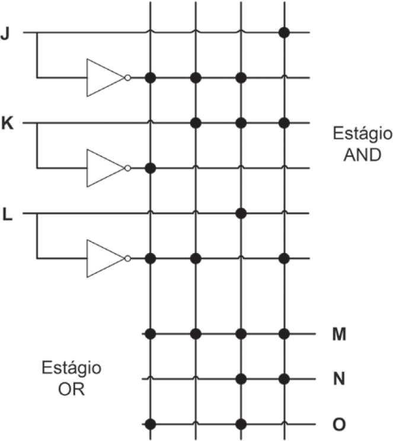

Um componente bastante usado em circuitos lógicos é a matriz lógica programável (ou PLA, do inglês Programmable Logic Array). Uma PLA usa como entrada um conjunto de sinais e os complementos desses sinais (que podem ser implementados por um conjunto de inversores). A lógica é implementada a partir de dois estágios: o primeiro é uma matriz de portas AND, que formam o conjunto de termosproduto (também chamados mintermos); o segundo estágio é uma matriz de portas OR, cada uma efetuando uma soma lógica de qualquer quantidade dos mintermos. Cada um dos mintermos pode ser o resultado do produto lógico de qualquer dos sinais de entrada ou de seus complementos.
É comum, em lugar de desenhar todas as portas lógicas de cada um dos estágios, representar apenas a posição das portas lógicas em uma matriz, conforme ilustra a figura a seguir.
A partir da figura apresentada, infere-se que as entradas JKL = 000 e JKL = 101 levam a saídas MNO iguais, respectivamente, a